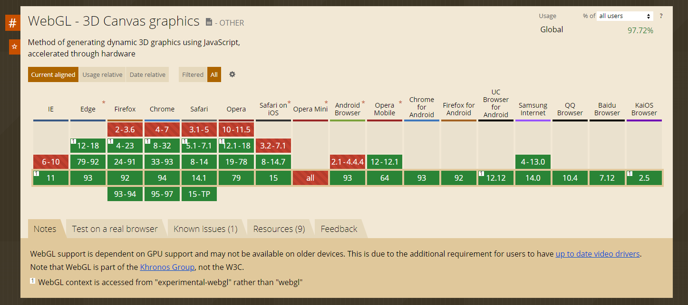

網站互動3D模型 比較表
- Three.js - Sketchfab - A-Frame
- 1. Three.js
- 2. Sketchfab
- 3. A-Frame
開發體驗對比:
| 開發體驗 | Three.js | Sketchfab | A-Frame |
|---|---|---|---|
| 開發語言 | Javascript開發 | ||
| 開發中常見概念 | 模型對象、材質、光源、動畫、座標、編輯器應用、API etc. 點此 | 內建編輯器、模型對象、材質、光源、動畫、座標、API etc. 點此 | |
| 加載簡易場景 | 100行左右 點此 | 25行左右 依照不同api增減 點此 | |
| 第一次嘗試時間 | 約半小時至一小時 github上下載最新原始碼，用常用的VScode打開，創建頁面，引入three.js文件，寫大約50行原始碼，開啟瀏覽器看 | 約一小時 開啟sketchfab登入帳號，打開3D文件上傳，並等待幾分鐘，開啟網頁3D編譯器開始設定細節，產生iframe，寫入html內並排版尺寸 | 約幾分鐘 將基本自有標籤貼入html內，再把模型檔路徑對應src，即可顯示在瀏覽器頁面上 |
用戶技能要求對比:
| 功能比較 | Three.js | Sketchfab | A-Frame |
|---|---|---|---|
| 定位 | 中量級3D Library | 商業展示專用 | 輕量級3D Library |
| 用戶群 | 中高級前端開發者、技術探索者 | 商業3D模組、多模組使用、共應商 | 前端開發者、設計師、初步學習3D用戶 |
| 主要功能 | 對WebGL進行封裝，提供更高階的技術，攝影機、模型控制器、能載入多種3D文件格式，創建基本幾何物件元素，打光場景功能，高階渲染Shader技術 等等底層功能 | 提供了基於WebGL和WebXR AR VR技術的查看器，能載入多種3D文件格式、攝影機、模型控制器，創建基本幾何物件元素，打光場景功能使用戶可以在Web上顯示3D模型，並可以在任何行動瀏覽器，桌面瀏覽器或虛擬實境頭戴式設備上查看。 | A-Frame 撰寫簡單且強大，降低了 VR 網頁的開發難度，底層基於 Three.js 語言，可以擴充不同組合結構 |
| 性能 | 可支援不同種類3D模型渲染，符合特殊要求，大量同類模型的渲染 | 可支援不同種類3D模型渲染、具有可不同模組化、平台穩定壓縮容量較小，適應高流量 | A-Frame 並沒有接觸瀏覽器佈局引擎。性能很好，在互動體驗 WebVR 體驗中非常強大 |
使用情境:
| 功能比較 | Three.js | Sketchfab | A-Frame |
|---|---|---|---|
| 商品的外層環景 | 可以製作6面視圖 | ||
| Tooltip 介紹 | 可以製作(難度高，需再研究) | 可以製作(簡易) | 可以製作(中等，需再研究) |
| 物件本身動態 | 可以製作高階動態(需要搭配GSAP技術混用) | 可以製作中階動態(需要搭配API) | 還未實際測驗(要再研究) |
| 點擊互動 | 可以支援(要再研究 難度較高) | 可支援 | 還未實際測驗 |
| 進階動畫製作 | 可以製作(搭配GSAP製作，難度較高，時程較長) | 可以製作(初階動畫)，進階動畫應用需要使用付費api | 可以製作(還未實際測驗) |
| 單一頁面多模型應用 | 可應用多個模型(但原始碼較肥大) | 可應用多個模型模組 | |
| 對於網頁本身是否很重 | 需要看模型大小程度(中) | 自動壓縮模型大小(小) | 由於本身只能放置gltf及glb所以屬於輕量化(小) |
| 手機板的支援程度 | 幾乎可支援，除了ie11以下(ie11可以) Safari on iOS 8以下不支援 Android Browser4.4.4以下不支援 | ||
| 瀏覽器限制(手機版跟電腦版都是) | IE11以下無法 Edge可以 Firefox 4-23以下無法 Chrome 8-32以下無法 Safari 5.1以下無法 Opera 12.1以下無法 | ||
| WebVR | 需要藉助其他插件進行 | 完全支援 | |
Three.js
Three.js 是一套基於 WebGL 開發出的 Javascript 函式庫，
它提供了比 WebGL 更簡單的 Javascript API，讓開發者能夠輕易在瀏覽器做 3D 繪圖。
Three.js比較偏向3D類型的canvas套件
官網Demo範例

優點:
1.對 WebGL 進行了良好的封裝，大大降低工程師的學習成本，可以說 Three.js 蠻像 3D 網頁中的 jQuery可以製作複雜模型特效，支援度跨平台良好
2.幾乎所有互動皆可以製作到
缺點:
1.技術門檻較高，文件類型種類最多，開發時程較長
- 
瀏覽器支援
左圖大部分瀏覽器都支援 WebGL，而雖然 WebGL 提供的接口非常豐富與強大，但使用起來仍稍嫌復雜，因此需要 Three.js。
- Three.js範例展示圖
- 可製作出高階動畫互動
- 視覺體驗佳
- 網站範例


Sketchfab
Sketchfab是一個發布，共享，購買和出售3D，VR和AR內容的平台。
提供了基於WebGL和WebXR技術的查看器，使用戶可以在Web上顯示3D模型，並可以在任何行動瀏覽器，桌面瀏覽器或虛擬實境頭戴式設備上查看。
3D模型安全和受到保護。
- 數據在靜止和傳輸中完全加密
- 平台定期接受安全審計
- 分佈式雲架構適應高流量
官網Demo範例

優點:
1.展示令人驚嘆的 3D 模型， 3D 查看器支持 "基於物理的渲染"(PBR)，允許藝術家和設計師對其內容進行逼真的渲染。
2.具有後處理效果的 3D 模型添加。3D 註釋功能和空間音頻非常適合音樂、描述產品功能或提供附加信息。
3.API 提供了啟動、停止查看器、移動相機、截屏、動畫對象、處理材料等功能。
缺點:
1.需要付額外費用， PREMIUM版本一年費用 $948 (USD)，ENTERPRISE版本費用需要聯繫客服
2.技術門檻中等，文件類型種類最多，開發時程中長

瀏覽器支援
1.在任何設備上Sketchfab 播放器與所有主要設備兼容。
2.在任何瀏覽器上Sketchfab 播放器適用於所有瀏覽器，無需任何插件。
3.支持所有主要的 3D 文件格式
- Sketchfab範例展示圖
- 有詳細資訊點
- 可以插入圖片
- 網站範例


A-Frame
A-Frame 撰寫簡單強大，核心底層是基於 Three.js 語言
有支援網頁VR功能
官網Demo範例
優點:
1.大幅降低了 VR 網頁的開發難度。
2.雖是以HTML標籤編輯，但仍可以使用 JavaScript、DOM APIs、Three.js、WebVR、WebGL 進行額外開發。
3.效能佳
4.A-Frame 提供內建的 3D 檢測器，類似瀏覽器開發工具，介面類似 Unity。
5.方便內建和擴充功能。
缺點:
1.想純寫技術流的人以及想了解底層的開發工程師來說不太適合

瀏覽器支援
受歡迎的主流行動裝置及桌面瀏覽器都有支援
- A-Frame範例展示圖
- 可支援VR設備
- A-Frame相較於Three.js較瘦，比較輕量
- 網站範例